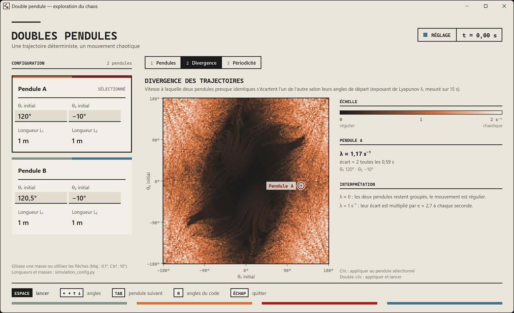
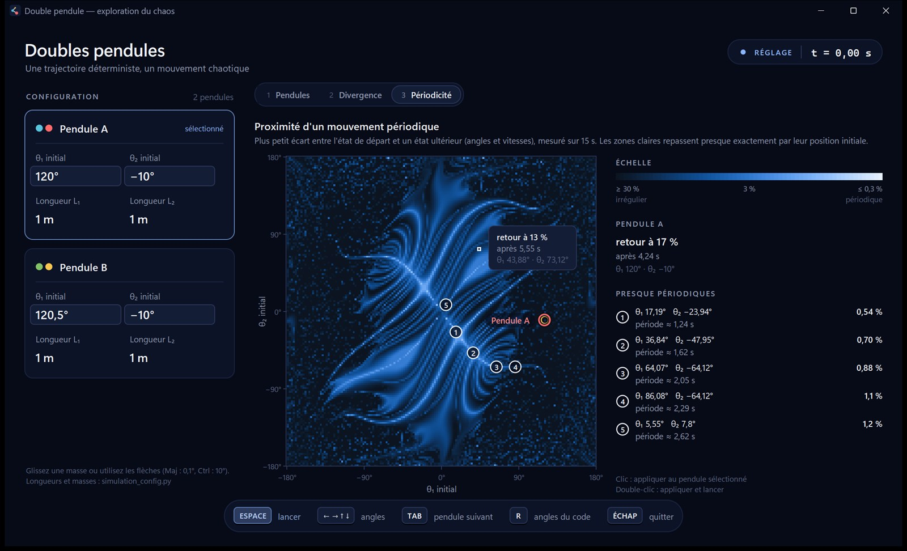

Context and goal
The double pendulum is the textbook example of a deterministic yet chaotic system: two almost identical starting points end up producing completely unrelated motions. The goal was to build a tool to see it, and then to measure it:
- simulate one or several double pendulums accurately, in real time;
- set the starting angles with the mouse, the keyboard or a click on a map;
- map, for each pair of initial angles, the divergence rate and how close the motion is to being periodic.
Physical model and integration
The equations of motion are derived with Lagrangian mechanics (point masses, massless rigid rods), with optional viscous damping. They are integrated with the 4th-order Runge-Kutta method: the error scales as h4, so halving the time step makes it sixteen times smaller. The animation advances in fixed 5 ms steps, independently of the display frame rate.
def step(self, dt: float) -> PendulumState:
"""Advance the simulation by dt seconds with Runge-Kutta 4."""
current = self.state
k1 = self.derivatives(current)
k2 = self.derivatives(self._offset(current, k1, dt / 2))
k3 = self.derivatives(self._offset(current, k2, dt / 2))
k4 = self.derivatives(self._offset(current, k3, dt))
values = [
getattr(current, name)
+ dt * (k1[i] + 2 * k2[i] + 2 * k3[i] + k4[i]) / 6
for i, name in enumerate(
("theta1", "omega1", "theta2", "omega2")
)
]
self.state = PendulumState(*values)
self.time += dt
return self.statedouble_pendulum.py (docstring translated).Sensitivity to initial conditions
The default configuration launches two pendulums that differ by only 0.5° in θ1. The gap between them grows on average as δ(t) ≈ δ0·eλt: with λ around 1 s−1, the two trajectories have nothing in common after about 5 seconds, which is exactly what you see on screen. Dividing the initial gap by a thousand only buys about 7 seconds: this is why the motion is unpredictable in the long run.
Divergence map
For each starting pair (θ1, θ2), the application measures the Lyapunov exponent λ with the Benettin method. A “twin” pendulum starts with an offset of 10−8. Every 0.1 s, the gap is measured and then scaled back to its initial size. This renormalization prevents the gap from saturating and measures the local stretching rate.

Periodicity map
The second map finds the starting points that come back almost exactly to their initial state. The closest return usually falls between two time steps; its exact time is recovered by parabolic interpolation. The best candidates are then refined by a local search, down to a hundredth of a degree.
The bright X crossing at the origin matches the two normal modes of the linearized system: slopes of ±√2, theoretical periods of 2.62 s and 1.09 s. At larger angles, these modes extend into nonlinear normal modes, whose period changes with the amplitude.

Performance
Each map has 160 × 160 = 25,600 cells, and each cell is a full 15 s simulation, i.e. 1,500 Runge-Kutta steps. Several techniques bring the computation down to a few seconds:
- Mirror symmetry: the start (−θ1, −θ2) gives the exact mirror image of the motion, so only half of the grid is computed.
- NumPy vectorization: all the cells of a batch advance together.
- Less trigonometry: only the sine and cosine of θ1 and θ2 are computed; the rest follows from the angle addition formulas.
- Parallel computing on up to 8 processes, with a map that fills in progressively.
- Caching: a map is only recomputed when one of its parameters changes.
Even when computing only half of the grid, the two maps amount to about 58 million Runge-Kutta steps.
Verification
Automated tests (unittest) check the physics and the computation:
| Check | Criterion |
|---|---|
| Energy conservation without damping | Relative drift < 10−7 over 5 s |
| Vectorized map computation vs. the animation model | Difference < 10−10 after 200 steps |
| Period of the in-phase normal mode | Matches theory within 0.02 s |
| Lyapunov exponent | Small at small angles, clearly positive near the upright position |
| Mirror symmetry | Same λ for (θ1, θ2) and (−θ1, −θ2) |
Interface
The interface only uses Tkinter, which ships with Python. Since its canvas does not anti-alias shapes, round elements (masses, indicator lights, rounded corners) are computed pixel by pixel and encoded as PNG, for a crisp display on high-resolution screens. Angles can be set with the mouse, the keyboard (to a tenth of a degree) or a click on a map.
Limitations
Measurements cover 15 s: a longer period is not detected. Each cell covers 2.25°, so finer structures can slip through the grid. Finally, the damping term is a convenient simplification, not an accurate friction model.